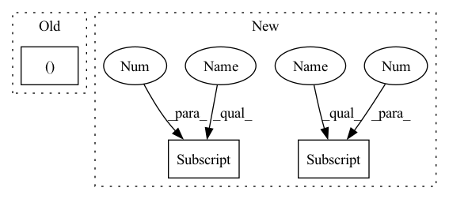

Pattern ID :816
Before Change
self.convP4 = Conv(self.inner_p4, self.inner_p4, 3, 2)
self.P5 = C3(self.inner_p4 + P5_size, self.inner_p5, self.get_depth(3), False)
self.concat = Concat()
self.out_shape = (self.inner_p3, self.inner_p4, self.inner_p5 )
print("PAN input channel size: P3 {}, P4 {}, P5 {}".format(self.P3_size, self.P4_size, self.P5_size))
print("PAN output channel size: PP3 {}, PP4 {}, PP5 {}".format(self.inner_p3, self.inner_p4, self.inner_p5))
After Change
self.convP3 = Conv(self.P3_size, self.P3_size, 3, 2)
self.P4 = C3(self.P3_size + self.P4_size, self.channels_outs[0], self.get_depth(3), False)
self.convP4 = Conv(self.channels_outs[0] , self.channels_outs[0], 3, 2)
self.P5 = C3(self.channels_outs[0] + self.P5_size, self.channels_outs[1], self.get_depth(3), False)
self.concat = Concat()
self.out_shape = [self.P3_size, self.channels_outs[0] , self.channels_outs[1]]
print("PAN input channel size: P3 {}, P4 {}, P5 {}".format(self.P3_size, self.P4_size, self.P5_size))
print("PAN output channel size: PP3 {}, PP4 {}, PP5 {}".format(self.P3_size, self.channels_outs[0], self.channels_outs[1]))
In pattern: SUPERPATTERN
Frequency: 3
Non-data size: 3
Instances Fragment ID: 2705721
Project Name: bobo-y/flexible-yolov5
Commit Name: 9fb058ef7b7925a243a436788f3f55dbb4b3e263
Time: 2022-07-02
Author: yl305237731@gmail.com
File Name: od/models/neck/PAN.py
M Class Name: PAN
N Class Name: PAN
M Method Name: __init__(6)
N Method Name: __init__(8)
M Parent Class: nn.Module
N Parent Class: nn.Module
M File Name: od/models/neck/PAN.py
N File Name: od/models/neck/PAN.py
M Start Line: 21
M End Line: 58
N Start Line: 21
N End Line: 53
Before Change
self.convP4 = Conv(self.inner_p4, self.inner_p4, 3, 2)
self.P5 = C3(self.inner_p4 + P5_size, self.inner_p5, self.get_depth(3), False)
self.concat = Concat()
self.out_shape = (self.inner_p3, self.inner_p4, self.inner_p5 )
print("PAN input channel size: P3 {}, P4 {}, P5 {}".format(self.P3_size, self.P4_size, self.P5_size))
print("PAN output channel size: PP3 {}, PP4 {}, PP5 {}".format(self.inner_p3, self.inner_p4, self.inner_p5))
After Change
def __init__(self, P3_size=256, P4_size=256, P5_size=512, channels_outs=[512, 1024], version="s"):
super(PAN, self).__init__()
self.version = str(version)
self.channels_outs = channels_outs
gains = {
"n": {"gd": 0.33, "gw": 0.25},
"s": {"gd": 0.33, "gw": 0.5},
"m": {"gd": 0.67, "gw": 0.75},
"l": {"gd": 1, "gw": 1},
"x": {"gd": 1.33, "gw": 1.25}
}
if self.version.lower() in gains:
// only for yolov5
self.gd = gains[self.version.lower()]["gd"] // depth gain
self.gw = gains[self.version.lower()]["gw"] // width gain
else:
self.gd = 0.33
self.gw = 0.5
self.re_channels_out()
self.P3_size = P3_size
self.P4_size = P4_size
self.P5_size = P5_size
self.convP3 = Conv(self.P3_size, self.P3_size, 3, 2)
self.P4 = C3(self.P3_size + self.P4_size, self.channels_outs[0], self.get_depth(3), False)
self.convP4 = Conv(self.channels_outs[0], self.channels_outs[0] , 3, 2)
self.P5 = C3(self.channels_outs[0] + self.P5_size, self.channels_outs[1], self.get_depth(3), False)
self.concat = Concat()
self.out_shape = [self.P3_size, self.channels_outs[0] , self.channels_outs[1]]
print("PAN input channel size: P3 {}, P4 {}, P5 {}".format(self.P3_size, self.P4_size, self.P5_size))
print("PAN output channel size: PP3 {}, PP4 {}, PP5 {}".format(self.P3_size, self.channels_outs[0], self.channels_outs[1]))
Fragment ID: 2705720
Project Name: bobo-y/flexible-yolov5
Commit Name: 9fb058ef7b7925a243a436788f3f55dbb4b3e263
Time: 2022-07-02
Author: yl305237731@gmail.com
File Name: od/models/neck/PAN.py
M Class Name: PAN
N Class Name: PAN
M Method Name: __init__(6)
N Method Name: __init__(8)
M Parent Class: nn.Module
N Parent Class: nn.Module
M File Name: od/models/neck/PAN.py
N File Name: od/models/neck/PAN.py
M Start Line: 21
M End Line: 58
N Start Line: 21
N End Line: 53
Before Change
raise ValueError("currently only "same" padding is supported")
kernel_size_factor = float(kernel_size_factor)
if type(kernel_size) in (list, tuple ):
kernel_size = [
compute_new_kernel_size(k, kernel_size_factor) for k in kernel_size
]After Change
res_list = nn.ModuleList()
stride_residual = (
stride if stride[0] == 1 or stride_last else stride[0] ** repeat
)
if len(residual_panes) == 0:
res_panes = [inplanes] Fragment ID: 2705741
Project Name: scart97/thunder-speech
Commit Name: 7d74ab01c5cba3921b0c91bdd1354b85daa8c2f8
Time: 2021-02-02
Author: scart.lucas@gmail.com
File Name: src/thunder/jasper/blocks.py
M Class Name: JasperBlock
N Class Name: JasperBlock
M Method Name: __init__(23)
N Method Name: __init__(25)
M Parent Class: nn.Module
N Parent Class: nn.Module
M File Name: src/thunder/jasper/blocks.py
N File Name: src/thunder/jasper/blocks.py
M Start Line: 342
M End Line: 466
N Start Line: 419
N End Line: 538